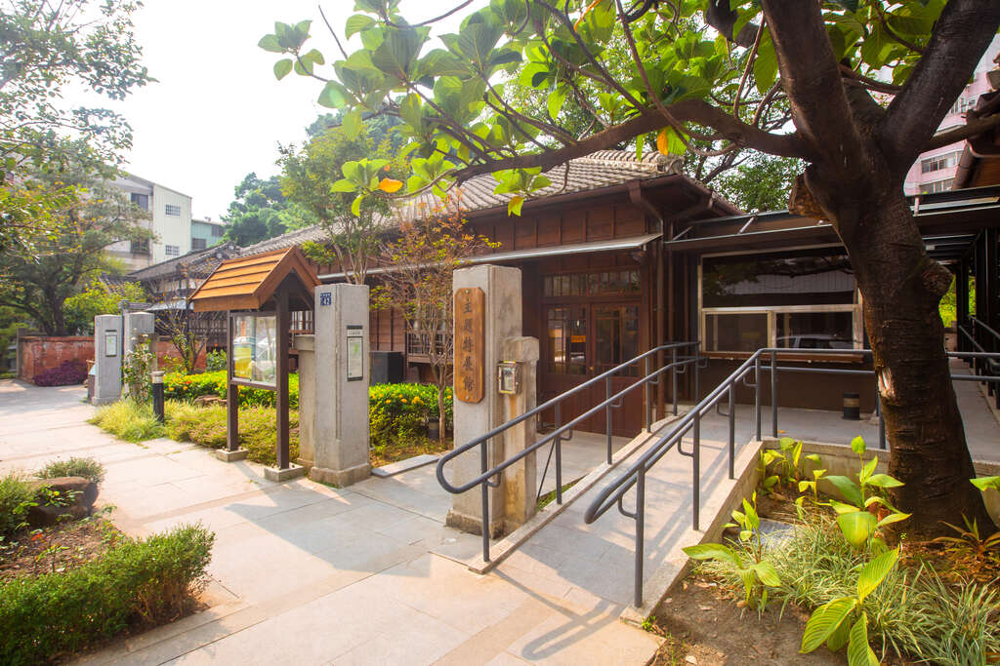
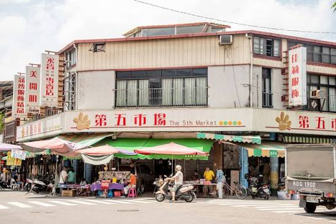
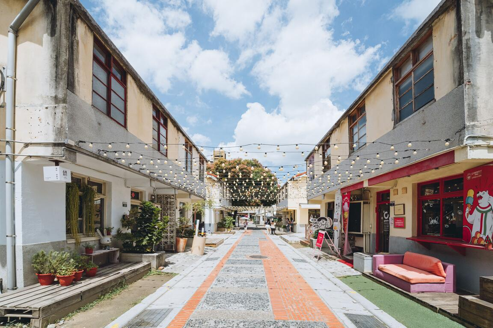
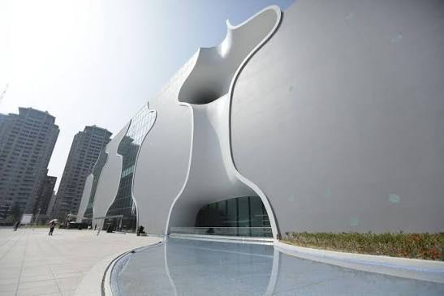

壹、專案執行摘要與選題動機
本企劃選定臺中舊城區的「臺中文學館」與鄰近的「第五市場」作為雙核心據點。臺中文學館前身為日治時期警察宿舍群，經修復後保留木造建築與老樹，營造出鬧市中靜謐的人文氛圍；一街之隔的第五市場則承載長年累積的在地生活記憶，匯聚傳統小吃與熱鬧的攤商互動。
我們透過步行路線串聯歷史文化空間與日常市集體驗，打造一條兼具文化探索與生活感受的城市漫遊路線。我們期望傳遞「歷史在此延續，生活也在此發生」的核心價值，讓外地遊客看見舊城不只是歷史的留存之地，更是一個充滿生活活力、值得親自探索的街區。
核心理念：以步行的節奏穿梭於舊城巷弄，打破年輕族群對傳統文化場域的遠距離感，將歷史建築的沉靜美感與傳統市場的在地煙火氣相互交織。
貳、分區一：臺中文學館（靜謐時光與歷史縱深）

日式宿舍群與文學歷史沉澱
臺中文學館原為1932年日治時期的警察宿舍群，園區內完整保留了木造日式官舍建築、榻榻米空間、雨淋板外牆與樹齡百年的蒼鬱老榕樹。館舍承載著臺中自日治時期至戰後的文學發展脈絡，包含櫟社、臺灣文化協會及笠詩社等重要文化記憶。
在雙核 Citywalk 路線中，臺中文學館代表著舊城區的「靜態記憶」與「歷史縱深」。旅人走進園區，可以遠離市區喧囂，體驗日式老屋的光影變化，走訪戶外文學步道、坐在充滿設計感與韻味的「開卷有益椅」上靜讀，享受沉靜的心靈洗禮與懷舊氛圍。
影展團隊影像規劃：導演組與攝影團隊運用鏡頭捕捉日式建築的美學、老榕樹氣根飄動的光影細節，以及主角在館內閱讀與互動大螢幕時的專注姿態。透過慢節奏運鏡與溫柔音效，呈現「時間放慢」的詩意沉澱感。
參、分區二：第五市場（常民煙火與日常記憶）

百年市集的在地飲食與人情溫度
自1938年設立以來，第五市場深耕舊城近百年，是臺中極具代表性的傳統消費市場。一街之隔的地理優勢，讓它與臺中文學館形成鮮明的「一靜一動」空間反差。市場內匯聚了肉羹麵、傳統小吃店、水果攤與裁縫服飾攤位，呈現出最真實、生生不息的常民生活景象。
根據本企劃團隊針對國內旅客進行的問卷調查（有效樣本222份）顯示，高達 55.4% 的受訪者造訪第五市場的核心目的為「品嚐在地美食」，且有 32% 的民眾希望體驗「在地生活」。這證明第五市場具備極高的在地美味吸引力與強烈的人情味感受。
影展團隊影像規劃：攝影團隊以 GoPro 第一人稱視角與快節奏剪輯，即時捕捉早市熙來攘往的人潮、叫賣聲、攤商熱情打招呼的笑容，以及主角品嚐在地熱氣騰騰肉羹麵的畫面，傳遞熱情溫暖的市井煙火氣與視覺味覺記憶。
肆、現況競品對比與 SWOT 策略分析
1. 臺中熱門雙核場域橫向競品對比
為切合本路線動靜雙核之定位，我們橫向對比了臺中具代表性的兩組旅遊組合，凸顯「臺中文學館×第五市場」無可取代的歷史紋理與生活反差價值：

競品一：草悟道 × 審計新村
定位與特性：#都會綠帶與文創聚落 #休閒商業消費。社群聲量極高（IG貼文數>15萬則），偏向風格咖啡廳、市集與年輕商業購物體驗。歷史縱深源自戰後公務宿舍轉型，但較缺乏舊城傳統生活紋理。

競品二：國家歌劇院 × 秋紅谷
定位與特性：#現代地標與生態公園 #藝文展演。社群熱度以國際建築地標打卡為主（IG貼文數>12萬則），滿足高價精緻餐飲與前衛建築美學。場域歷史縱深相對較短，無特定在地常民歷史。
本路線獨特差異化：「臺中文學館 × 第五市場」同時兼具高高近百年的歷史縱深（1932警察宿舍群 × 1938傳統市場），並且只需 1 分鐘步行距離即可享受「日式靜謐人文」與「常民美食煙火氣」之強烈動靜反差，吸引追求在地日常感與文化深度的旅客。
2. SWOT 交叉分析與推廣策略
- 優勢 (S)：日式木造官舍與老樹文化景觀鮮明；第五市場具備 55.4% 強大美食吸引力；兩地步行距離僅1分鐘。
- 劣勢 (W)：文學館吸引動機較單一；過去缺乏跨場域整合的系統性 Citywalk 導覽與社群曝光。
- 機會 (O)：政府推動歷史空間再生政策；Z 世代盛行復古底片、CCD 相機拍攝與短影音社群分享趨勢]。
- 策略執行 (SO/WO)：善用日式歷史建築 (S1) 搭配底片復古美學 (O2)，透過短影音宣傳；並將第五市場美食體驗 (S3) 串聯文學探索，轉化為親民的半日 Citywalk 漫遊路線。
伍、動靜雙核 Citywalk 定位與 Persona 人物誌
1. 目標受眾 Persona 分析
根據企劃團隊設定之 Persona（代表人物：王x安 19歲自媒體創作者 / 江x辰 26歲企業職員）：
- 功能性需求：期待隨性探索具在地特色的歷史建築與庶民美食，並尋找優質拍攝場景進行社群記錄與分享。
- 情感性需求：期待擺脫緊湊行程壓力，透過步行節奏放鬆身心，感受舊城人情溫度與歷史沉澱感。
2. 定位聲明與推廣 Slogan
行程節奏規劃：本企劃定位為「臺中舊城動靜雙核 Citywalk 複合式漫遊路線」。建議旅客上午先前往第五市場品嚐在地特色小吃、穿梭市集體驗常民熱鬧日常；待靠近中午或午後，再轉入一街之隔的臺中文學館，感受老樹與木造建築交織的靜謐時光。透過動至靜的流暢轉換，讓一整天的旅程兼具生活娛樂與心靈陶冶。
核心 Slogan：「以腳步為序，讀一座城」。